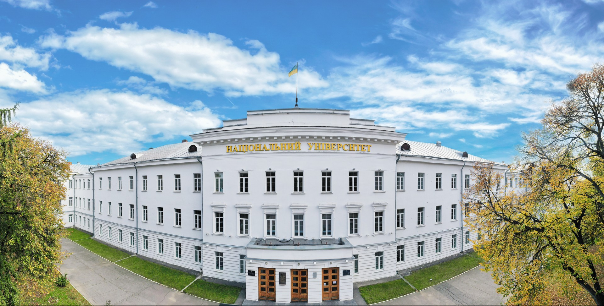

Сенсорне зображення: Університетський кампус

Області на карті:
- Головний корпус - основна навчальна будівля
- Бібліотека - місце для навчання та читання
- Спорткомплекс - заняття фізкультурою та спортом
- Студентське містечко - гуртожитки для студентів
- Парк - місце для відпочинку та прогулянок
Студент: Іванов Артур, група 303-ТН
Лабораторна робота №6, завдання 5